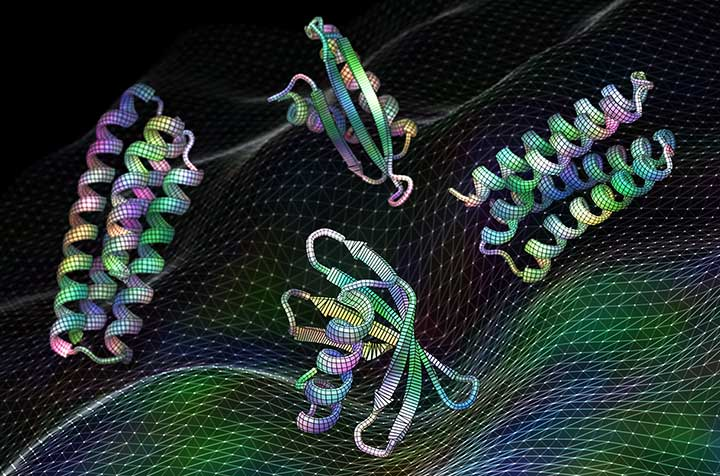

New Proteins, Better Batteries: Scientists Are Using AI to Speed Up Discoveries
Introduction
The world of science has always been defined by relentless curiosity and a quest for knowledge. Scientists have traditionally relied on their expertise, dedication, and patience to unravel the mysteries of the universe. However, in recent years, a new ally has emerged in their pursuit of understanding and innovation: artificial intelligence.
AI in Drug Discovery
One of the most promising applications of AI in the field of science is drug discovery. Susana Vazquez-Torres, a graduate student at the University of Washington, envisions a future where AI accelerates the development of new drugs for neglected diseases. With the current therapeutics often being unsafe and costly, the need for a more efficient approach is evident. Traditionally, developing new drugs was a slow and laborious process, sometimes taking years to identify a promising compound. However, AI has rapidly transformed this landscape. Researchers like Vazquez-Torres now have the tools to generate candidate drugs within months, a feat once considered unattainable.
AI-Powered Protein Design
At the University of Washington, scientists are harnessing the power of AI to design new proteins. Proteins are the workhorses of biology, performing a wide range of functions, from building muscles and organs to fighting off viruses. Yet, the sheer number of possible protein designs presented a significant challenge. In the past, researchers had to systematically test thousands of potential designs, a process akin to trying every key in a bucket to find the one that fits the lock. With AI, this trial-and-error approach has been replaced by a more efficient method. AI, particularly diffusion modeling, allows scientists to craft proteins with precision, reducing the time and resources needed for discovery.
AI's Role in Materials Science
AI's influence extends to materials science, where researchers are exploring new materials for renewable energy applications, such as batteries and solar panels. While AI has streamlined drug discovery and protein design, materials science presents a unique set of challenges. Maria Chan, a researcher at Argonne National Laboratory, highlights the complexity of materials. Unlike proteins, materials exhibit properties that depend on interactions at various scales, from the molecular to the macroscopic. While AI offers promise, the field's lack of comprehensive data and the intricacies of materials make it a more challenging domain for AI applications.
AI's Potential for Scientific Discovery
Beyond specific applications like drug discovery and protein design, some scientists believe AI can take on a more fundamental role in scientific discovery. Hannaneh Hajishirzi, working at the Allen Institute for Artificial Intelligence, envisions AI systems that can analyze vast amounts of scientific literature and propose new hypotheses. In a world where scientific knowledge spans decades and thousands of papers, AI could uncover connections and insights that might elude human researchers.
Challenges and the Way Forward
Despite the transformative potential of AI in science, challenges remain. The availability and organization of data play a pivotal role in determining the fields where AI can make the most significant impact. While some domains, like protein science, benefit from extensive databases, others, such as materials science, require a more concerted effort to make AI effective. Moreover, the development of AI systems capable of automating experiments and producing reliable results is still a work in progress. Ensuring the accuracy and trustworthiness of AI-generated hypotheses and findings is essential for its integration into scientific practice.
Conclusion
Artificial intelligence is revolutionizing scientific research, accelerating discoveries, and changing the way we explore the unknown. As AI continues to evolve, the collaborative efforts of human researchers and intelligent machines promise a future where we unlock the secrets of the universe more swiftly and efficiently than ever before. The combination of human creativity and AI's analytical power offers new horizons for scientific discovery. In a rapidly evolving world, the partnership between humans and AI could reshape our understanding of the universe, bringing us closer to solving some of the most profound questions in science.